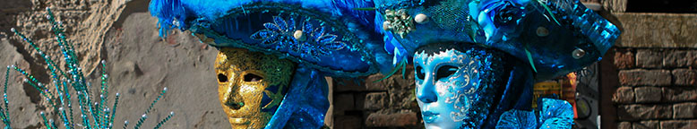
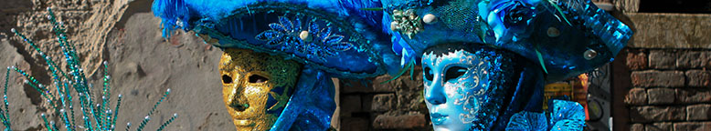

About Us
Since our founding 23 years ago, with the purchase of a state-of-the-art Ferris, the company has enjoyed tremendous success. The Caruso brothers, our experienced and insightful leaders, bring a lifetime of carnival operations knowledge to each and every one of our engagements. The integrity and reliability of our operations, built over a lifetime, is testified to by our decades long relationship with many of North America's largest and oldest events. Our route stretches from across the Texas Gulf Coast to West Texas and the South Plains.
ADDITIONAL INFORMATION
Learn the lingo
Here are a few basic terms you'll want to know before you don a mask and head out for your first Carnival experience.
- Krewe.
- This is a Carnival organization made up of members who plan and carry out the various themed parades and balls. The Krewe of Rex, for instance, honors the "king" of Carnival and stages a spectacular, traditional parade on Mardi Gras, along with an elaborate ball later that night. In keeping with the "mystical" tradition of Carnival, some of the oldest krewes keep their membership shrouded in secrecy. This is why krewes require members to wear masks during parades. (Wearing masks and costumes is also part of the fun for everyone else.) In addition to their Carnival activities, many krewes also participate in charitable efforts throughout the year.
- Parade.
- OK, everybody knows what this is, but if you haven't seen a Mardi Gras parade, well, you haven't really seen a parade. For New Orleans parades, krewes build huge, elaborate floats that carry riders who may number in the dozens. The spectacle of these events is something to behold, and spectators get a bonus thrill as float riders toss loads of colorful trinkets along the way.
- Throws.
- We call the parade trinkets "throws." The most common throws are strings of plastic beads that parade goers love to collect and wear around their necks as "trophies" from their parade experience. Each krewe usually also throws medallions, small toys or plastic cups imprinted with the krewe logo.
- Purple, green and gold.
- These are the "official" colors of Mardi Gras, and you'll see them everywhere. According to some Carnival historians, purple represents justice, green, faith, and gold, power.